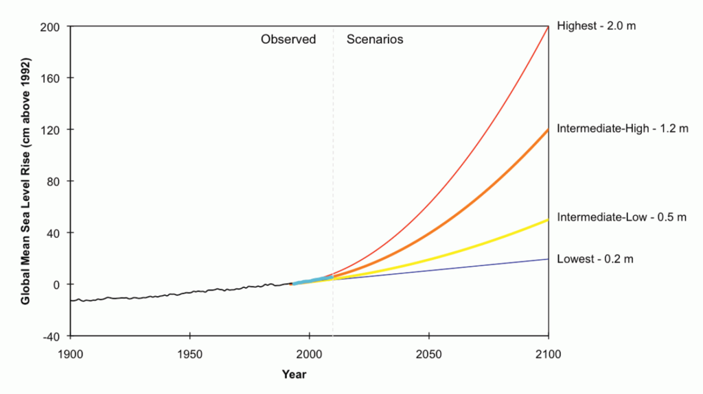
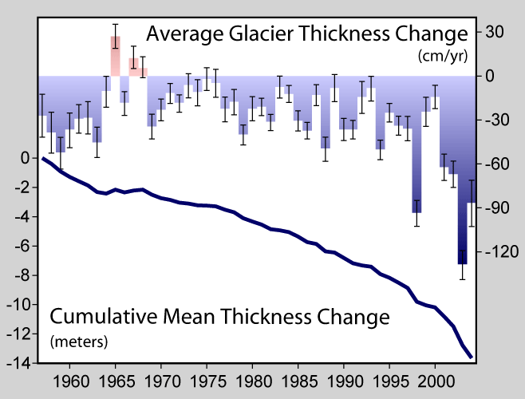
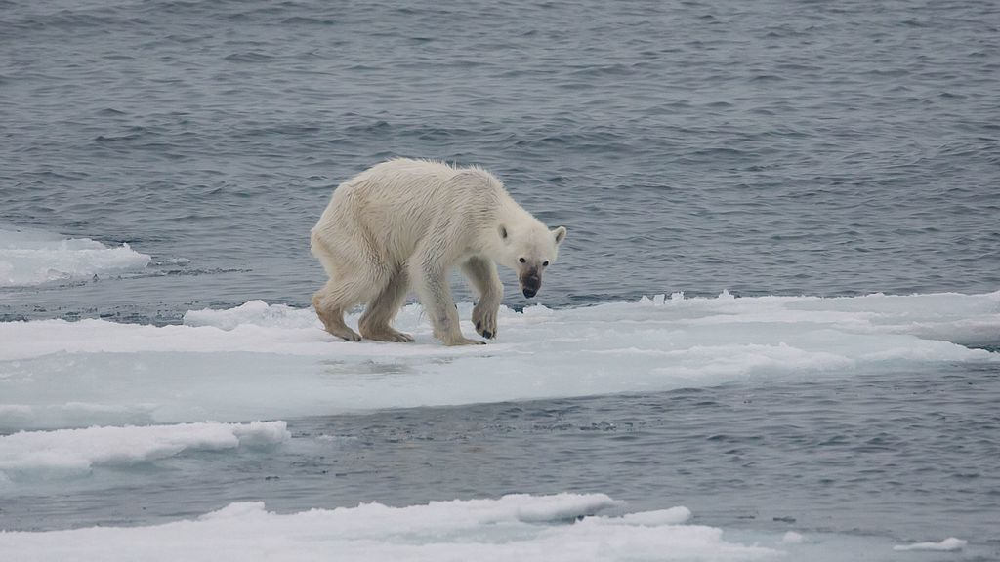

 Overall, it is expected that climate change will result in the extinction of many species and reduced diversity of ecosystems. Rising temperatures have been found to push bees to their physiological limits, and could cause the extinction of bee populations. A 2012 study concluded that continued ocean uptake of CO2 affects the brains and central nervous system of certain fish species and this impacts their ability to hear, smell, and evade predators. The study authors note, "We've now established it isn't simply the acidification of the oceans that is causing disruption—as is the case with shellfish and plankton with chalky skeletons—but the actual dissolved CO2 itself is damaging the fishes' nervous systems."
Arctic sea ice decline, sea level rise, retreat of glaciers: Global warming has led to decades of shrinking and thinning in a warm climate that has put the Arctic sea ice in a precarious position, it is now vulnerable to atmospheric anomalies.Projections of declines in Arctic sea ice vary. Recent projections suggest that Arctic summers could be ice-free (defined as ice extent less than 1 million square km) as early as 2025–2030. The sea level rise since 1993 has been estimated to have been on average 2.6 mm and 2.9 mm per year ± 0.4 mm. Additionally, sea level rise has accelerated from 1995 to 2015. Over the 21st century, the IPCC projects for a high emissions scenario, that global mean sea level could rise by 52–98 cm.
Extreme weather, extreme events, tropical cyclones: Data analysis of extreme events from 1960 until 2010 suggests that droughts and heat waves appear simultaneously with increased frequency. Extremely wet or dry events within the monsoon period have increased since 1980. Projections suggest a probable increase in the frequency and severity of some extreme weather events, such as heat waves.
 Ecosystem changes, changes in ocean properties: In terrestrial ecosystems, the earlier timing of spring events, as well as poleward and upward shifts in plant and animal ranges, have been linked with high confidence to recent warming. It is expected that most ecosystems will be affected by higher atmospheric CO2 levels, combined with higher global temperatures.Expansion of deserts in the subtropics is probably linked to global warming. The physical effect of global warming on oceans include an increase in acidity, and a reduction of oxygen levels (ocean deoxygenation).Increases in atmospheric CO2 concentrations have led to an increase in dissolved CO2 and thus ocean acidity, measured by lower pH values. Ocean acidification threatens damage to coral reefs, fisheries, protected species, and other natural resources of value to society. Without substantial actions to reduce the rate of global warming, land based ecosystems are at risk of major ecological shifts, transforming composition and structure.
Long-term effects of global warming, runaway climate change: On the timescale of centuries to millennia, the magnitude of global warming will be determined primarily by anthropogenic CO2 emissions. This is due to carbon dioxide's very long lifetime in the atmosphere.Long-term effects also include a response from the Earth's crust, due to ice melting and deglaciation, in a process called post-glacial rebound, when land masses are no longer depressed by the weight of ice. This could lead to landslides and increased seismic and volcanic activities. Tsunamis could be generated by submarine landslides caused by warmer ocean water thawing ocean-floor permafrost or releasing gas hydrates.
 Abrupt climate change, cold blob (North Atlantic): Climate change could result in global, large-scale changes in natural and social systems. Examples include ocean acidification caused by increased atmospheric concentrations of carbon dioxide, and the long-term melting of ice sheets, which contributes to sea level rise. Some large-scale changes could occur abruptly, i.e., over a short time period, and might also be irreversible. Examples of abrupt climate change are the rapid release of methane and carbon dioxide from permafrost, which would lead to amplified global warming. Another example is the possibility for the Atlantic Meridional Overturning Circulation to slow- or shutdown (see also shutdown of thermohaline circulation).This could trigger cooling in the North Atlantic, Europe, and North America.It would particularly affect areas such as the British Isles, France and the Nordic countries, which are warmed by the North Atlantic drift.
The Arctic, Africa, small islands and Asian megadeltas are regions that are likely to be especially affected by future climate change. Africa is one of the most vulnerable continents to climate variability and change because of multiple existing stresses and low adaptive capacity. Existing stresses include poverty, political conflicts, and ecosystem degradation. By 2050, between 350 million and 600 million people are projected to experience increased water stress due to climate change (see Climate change in Africa). Climate variability and change is projected to severely compromise agricultural production, including access to food, across Africa. Research projects that regions even may become uninhabitable, due to a high wet-bulb temperature.